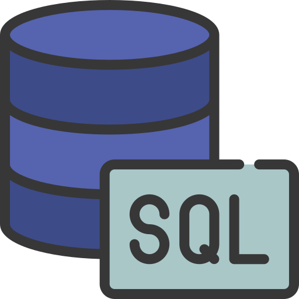
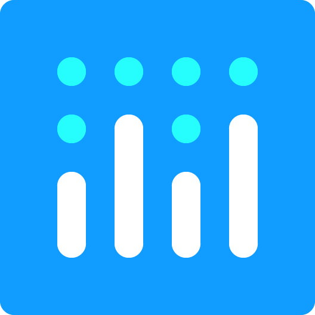
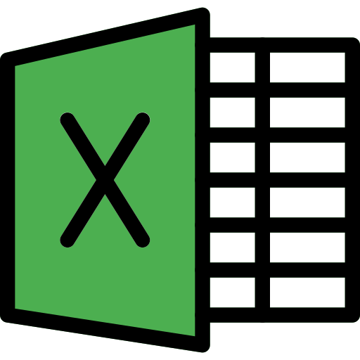

Disponível para novos projetos
Gabriel Menezes
Python Developer
Python Developer com experiência em ETL, análise de dados e desenvolvimento de aplicações. Trabalho com SQL, Pandas, Streamlit e FastAPI para automatizar processos e transformar dados em soluções práticas.
Sobre mim
Sou desenvolvedor Python com foco em automação, análise de dados e desenvolvimento de soluções. Trabalho com SQL, Pandas, Streamlit e FastAPI para construir processos de ETL, aplicações web e ferramentas voltadas para tratamento, organização e visualização de dados.
Busco transformar dados em informações úteis para apoiar tomadas de decisão, sempre aplicando boas práticas de desenvolvimento, modelagem de dados e automação de processos.
- Antes da programação: experiência em controle de qualidade e logística trouxe pra código a mesma disciplina de processo, precisão e conferência de resultados.
- Foco atual: Python, SQL, ETL, análise de dados, automação de processos e segurança da informação.
Experiência
Execução e padronização de processos de preparação de amostras químicas para análise, com rigoroso controle de qualidade, garantindo precisão nos resultados e confiabilidade dos registros.
Operação de empilhadeiras elétricas e a combustão em carga e descarga de caminhões, além da movimentação e organização de estoques, assegurando agilidade no fluxo de mercadorias e segurança nas operações do armazém.
Habilidades
Desenvolvimento & APIs
Banco de dados

SQLDados & Análise

Plotly Streamlit
ExcelVersionamento
Websites
Calculadora inteligente construída com FastAPI, feita para resolver operações lógicas e matemáticas de forma rápida e automatizada.
Plataforma de controle financeiro pessoal: registro de transações, categorias e metas de reserva com acompanhamento de progresso.
Automação de análise de dados corporativos com visualização interativa: agrupamentos, filtros e engenharia de dados.
Painel de BI em Python com Pandas e Plotly, transformando planilhas de vendas em métricas de faturamento e performance.
Pipeline de Extração, Transformação e Carga (ETL) desenvolvido em Python utilizando a biblioteca Pandas para processar bases de dados de vendas de lojas brasileiras, preparando os dados para análises de negócios (BI) e futuras integrações com dashboards interativos.
Projetos SQL
Projetos
Nexus Calc (FastAPI)
Projetada para processar operações lógicas e de cálculo de forma rápida, eficiente e automatizada.
Nexus Finance (FastAPI)
Permite controlar receitas e despesas, planejar metas de economia e acompanhar relatórios financeiros, com suporte a tema claro/escuro e instalação como aplicativo.
Cadastro Corporativo (FastAPI)
Sistema backend para gerenciamento de funcionários e controle de acesso corporativo, com criptografia de CPFs para proteção de dados sensíveis.
ETL com Streamlit
Automação de análise de dados corporativos e visualização em interface web interativa, aplicando boas práticas de engenharia de dados.
Automação e Análise de Dados
Script em Python com Pandas para automatizar limpeza, transformação, cruzamento e resumo de dados de vendas, com exportação em Excel.
Painel de Vendas
Painel de BI interativo em Python, com Pandas para o pipeline de dados e Streamlit + Plotly para a visualização.